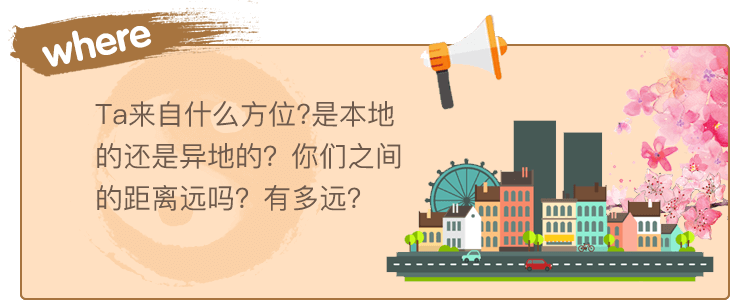
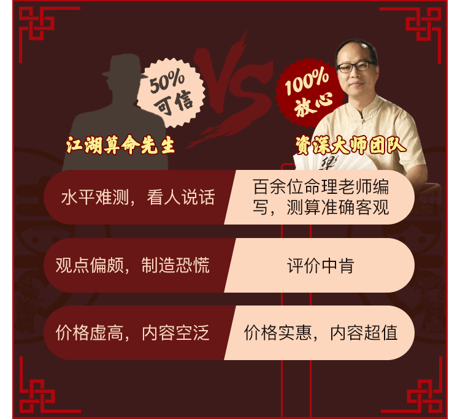
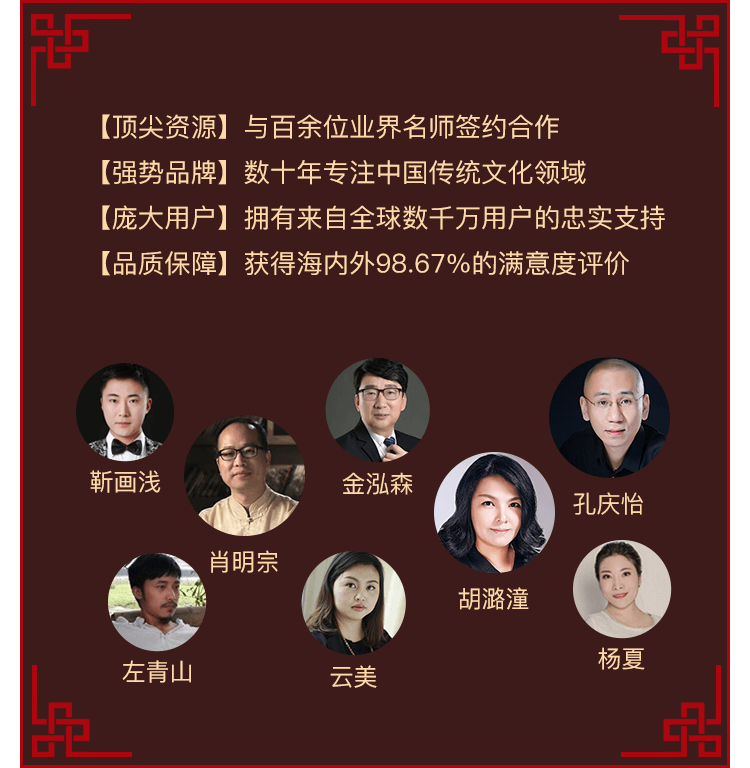
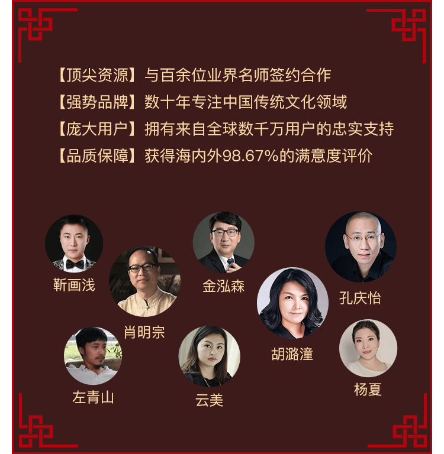

身边的朋友都已成双成对，
而你是否依然单身？
总是遇不到对眼的人？
究竟谁才是你的真命情人？
如何才能遇见Ta，不再错过属于你的真爱？
精准八字预测，快速给你答案！
而你是否依然单身？
总是遇不到对眼的人？
究竟谁才是你的真命情人？
如何才能遇见Ta，不再错过属于你的真爱？
精准八字预测，快速给你答案！
资深八字命理师精准预测你命中注定的另一半,Ta的长相、身高、性格以及你们相识的机缘，助你尽快找到Ta，圆满你的爱情故事！准确预测婚后情况，并给出建议让你的婚姻更加幸福稳定！




 

测后反馈
张* 156*****845
自问个人条件不错，可就是一直没找到合适的对象，被家人催到都烦了，朋友也说我要求高，心里的苦只有自己知道。测算以后，说是今年就会出现，果然6月份就遇到他了，现在甜蜜中，感恩！
刘** 151*****523
超准，说是通过亲戚朋友介绍认识的，果然上个月我们经朋友介绍认识，现在相处得也不错，很赞！
高* 181*****766
宅男一枚，平常和异性接触得比较少，看了这个建议，现在遇到一个不错的对象，希望能有个好结果吧，感激！
周** 151*****234
和男朋友快谈婚论嫁了，但是还是有点不太确定，测出来的结果感觉和男朋友重合度还蛮高的，感觉安心了一些
王* 138*****256
认识不少女性朋友，可是追求过几个都失败了，都不知道什么原因。后来老师帮我分析，让我改进了两个方面，果然现在进展不错，看来今年可以脱单了，哈哈！
黄** 182*****400
年龄不小了，家里催得很烦，但是又不想凑合，希望能像大师说得那样明年能遇到。
李* 150*****683
内容很详细，感觉和现在正在追自己的人很像啊，好纠结

热爱伟大祖国 | 维护民族团结
弘扬传统文化 | 促进社会和谐